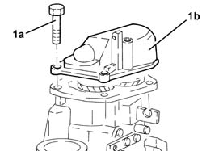
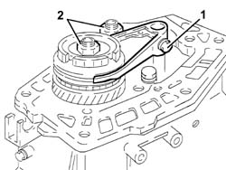
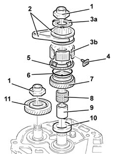
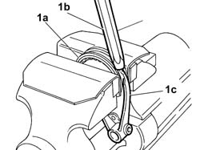
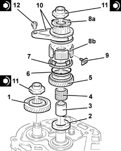
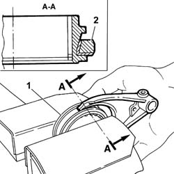

2110B42 5th speed gears of manual gearbox with differential - r+r with gearbox removed
- Path
- Procedures > 21 GEARBOX UNIT > 2110 MANUAL GEARBOX WITH DIFFERENTIAL > 2110B manual gearbox with differential gears and synchronisers > 2110B42 5th speed gears of manual gearbox with differential - r+r with gearbox removed
- Kind
- repair procedure (removal / refitting; the operation number is the code)
- Applies to
- all engines; all production periods
- Interactive page
- https://sloeber94.github.io/elrnDB-fDbl/en/#/2585316
Applies to: all engines; all production periods
 Removing
Removing
 Refitting
Refitting1. Undo the bolts (1a) and remove the rear cover (1b).

Applies to: all engines; all production periods
Engage any gear using the gear selector/engagement lever.
1. Undo the bolt securing the 5th speed selector fork to the main shaft.
Engage 5th speed, pressing the selector fork onto the main shaft.
2. Remove the staking and loosen the ring nuts for the main and layshafts.
Position the 5th speed selector fork in neutral.

Applies to: all engines; all production periods
1. Completely undo the ring nuts for the main and layshafts.
2. Remove the 5th speed driven gear.
3. Remove the 5th speed synchronizer rollers and springs retaining flange.
4. Remove the 5th speed selector fork.
5. Remove the 5th speed sliding sleeve.
6. Remove the 5th speed hub pre-synchronizer mountings.
7. Remove the 5th speed sliding sleeve hub.
8. Remove the 5th speed synchronizer ring.
9. Remove the 5th speed drive gear.
10. Remove the needle bearing for the 5th speed drive gear.
11. Remove the 5th speed drive gear bush.

Applies to: all engines; all production periods
1. Dismantle the 5th speed engagement fork, lock the sleeve (1a) in the vice, with the protective plates fitted then, use a brass drift (1b), alternately on the two ends of the selector fork (1c) until it is released from the sleeve.

Applies to: all engines; all production periods
Refitting
Removing1. Fit the 5th speed drive gear bush.
2. Fit the needle bearing for the 5th speed drive gear.
3. Fit the 5th speed drive gear.
4. Fit the 5th speed synchronizer gear.
5. Fit the 5th speed sliding sleeve hub.
6. Fit the 5th speed sliding sleeve.
7. Fit the pre-synchronizer mountings in the 5th speed sliding sleeve hub.
8. Fit the 5th speed control fork.
9. Fit the 5th speed synchronizer ring and roller retaining flange.
10. Fit the 5th speed driven gear.
11. Tighten the new rings nuts for the main and layshafts to torque.
 | Fastening | Component | Ø | Value (daNm) |
|---|---|---|---|---|
11 | Ring nut | GEAR SHAFTS | M20 | 11.8 |
1. Tighten the 5th speed selector fork bolt to torque.
| Fastening | Component | Ø | Value (daNm) |
|---|---|---|---|---|
12 | Bolt | GEARBOX INTERNAL CONTROLS | M6 | 1.8 |

Applies to: all engines; all production periods
1. Reassemble the 5th speed engagement fork, locking the sleeve in the vice with the protective plates fitted;
2. Position the selector fork that the its tapered part is in the same direction as that of the sleeve, resting it against the side of the sleeve which has the smaller diameter;
fit the selector fork manually, exerting the necessary pressure, until it is completely inserted in the sleeve.

Applies to: all engines; all production periods
Apply sealant to the contact surfaces between the main and layshaft rear bearing retaining plate and the rear cover.
 | Type | Component | Name | Qty. |
|---|---|---|---|---|
- | Sealant | GEARBOX SEALS/GASKETS | Loctite 573 | - |
Fit the rear cover and fix it tightening the bolts to torque.
| Fastening | Component | Ø | Value (daNm) |
|---|---|---|---|---|
- | Bolt | GEARBOX REAR COVER | M8 | 2.5 |